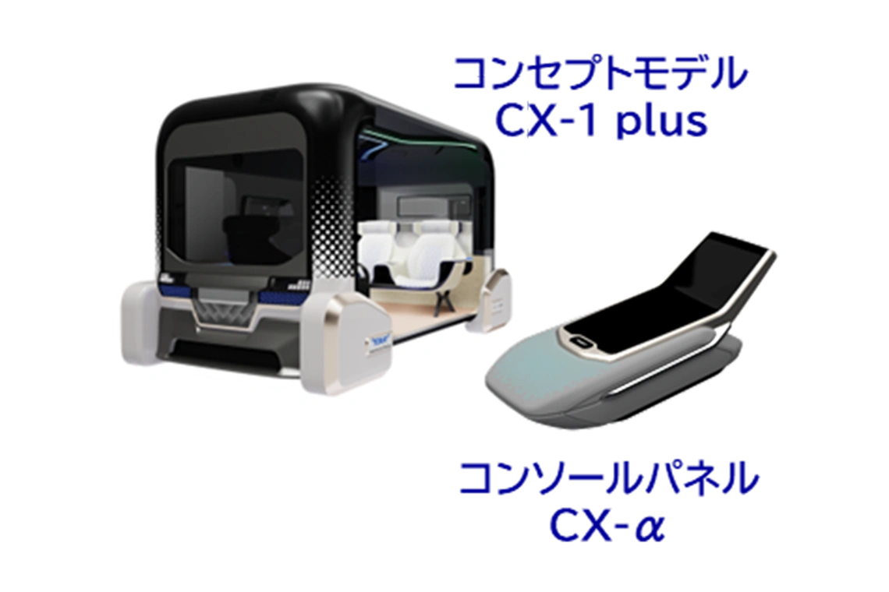

環境・モビリティ開発センター(EMC)
東レグループの環境・モビリティ分野の技術開発戦略の企画・開発実務および技術マーケティングを担う総合開発拠点
「モビリティ関連資材」「新エネルギー関連部材」「環境配慮型資材」「健康・衛生関連資材」をターゲット領域とし、東レグループの保有する繊維、フィルム、樹脂、炭素繊維複合材料、電子情報材料や、これらを組み合わせる高次加工技術、部材設計技術を駆使し、アプリケーションイノベーション創出に取り組んでいます。
環境・モビリティ領域の動きが活発な中国、欧州のグローバルな成長機会を取り込むために、東麗先端材料研究開発(中国)有限公司（TARC）やオートモーティブセンター欧州（AMCEU）と連携した技術開発にも取り組んでいます。
研究領域・テーマ
-
環境、モビリティ、健康・衛生資材開発
①環境資材：省エネ、CO2削減、快適性向上などに貢献する住環境資材や農業用資材等を開発しています。
②モビリティ資材：快適空間を創出するカーシート材料や吸音材、電動化に貢献するモーター絶縁フィルムなどを開発しています。
③健康・衛生資材：健康、長寿社会の実現に貢献する血糖値センサーやおむつ用資材などを開発しています。 -
新エネルギー関連部材開発
モビリティの性能・安全性向上や低炭素社会実現に貢献する燃料電池、リチウムイオン電池などの部材・材料開発を推進しています。
燃料電池電極基材等の試作・評価設備、発電性能評価設備、ならびにリチウムイオン電池の試作・安全性評価設備をセンター内に保有して、材料・プロセスの要素技術開発、評価を行っています。 -
技術マーケティング
環境・モビリティ領域の市場拡大と多様化に対して、分野横断的かつグローバル連携による東レグループの先端材料によるトータルソリューションを提供するための技術マーケティング活動を推進しています。
特に、「自動運転」「空間快適化」「パワートレイン・電動化」「安全性向上」「軽量化」「カーボンニュートラル／資源循環」分野の技術マーケティングや技術開発戦略の企画に取り組んでいます。
研究成果
-
トレカ®カーボンペーパー®GDL
-
モータ絶縁フィルム
-
 コンセプトモデル
研究者情報
アクセス
環境・モビリティ開発センター(EMC)
所在地
〒520-2141
滋賀県大津市大江1-1-1